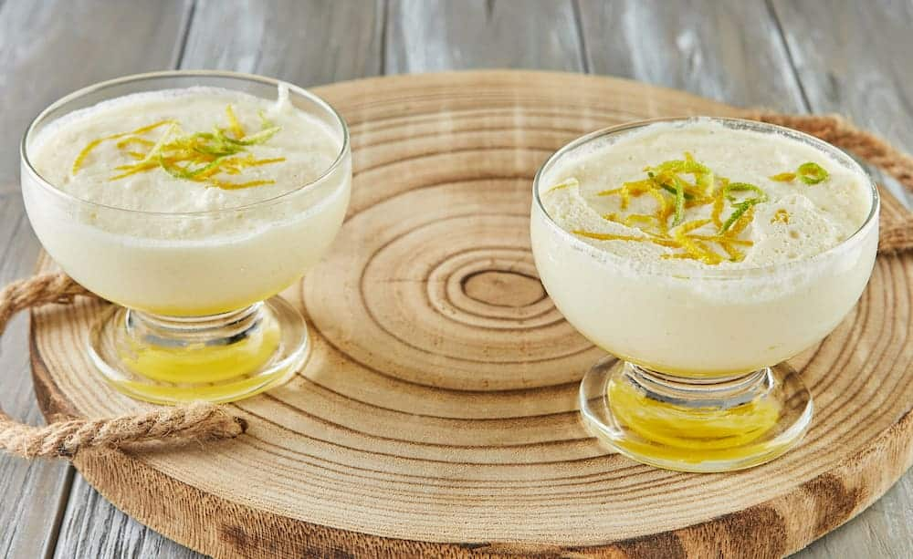
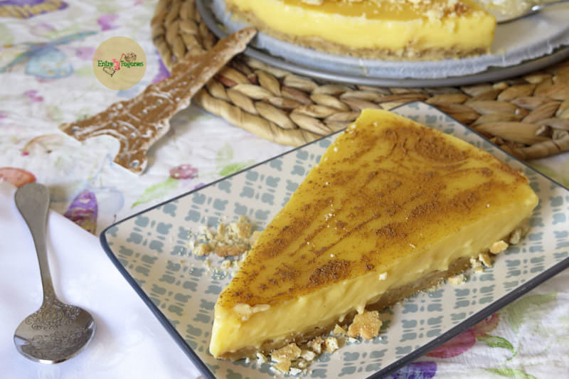
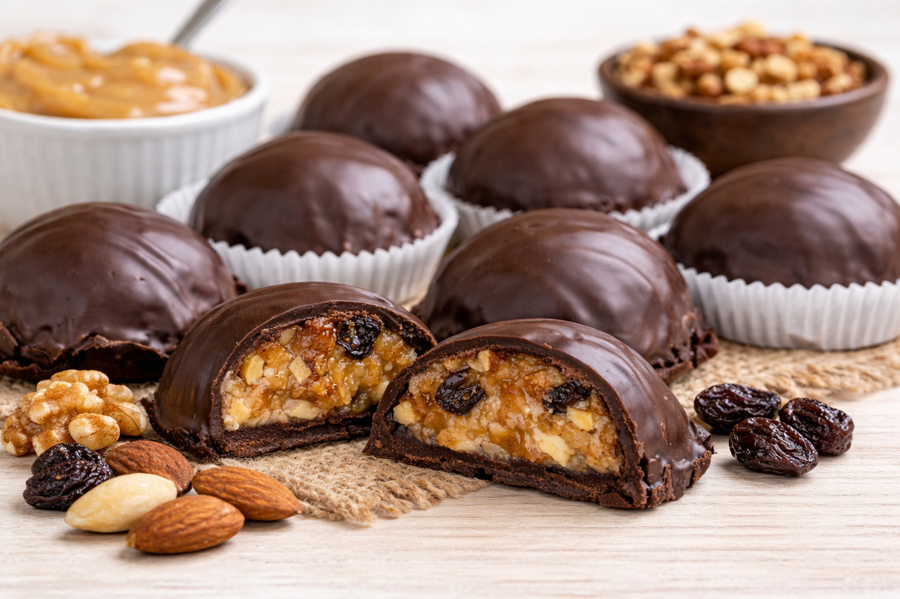

Flan libanés
Este flan libanés es un postre delicado, aromático y fácil de preparar que conquista por su suavidad y sabor sutil. Su textura ligera se combina con el aroma del agua de azahar y el toque especial del agua de rosas, creando un postre elegante y perfecto para cualquier ocasión. Una receta sencilla con ingredientes básicos, pero que sorprende por su sofisticación.
- Leche entera – 335 ml
- Harina de maíz refinada (maicena) – 30 g
- Azúcar glas – 30 g
- Agua de azahar – 3 ml
- Agua de rosas – 3 ml
- Agua (para el almíbar) – 100 ml
- Azúcar (para el almíbar) – 150 ml
- Agua de azahar (para el almíbar) – 30 ml
- Pistachos para decorar
Para preparar el flan, primero calentamos en un cazo la leche junto con la maicena, el azúcar glas, el agua de azahar y el agua de rosas, removiendo constantemente para evitar grumos. Cuando la mezcla espese después de unos minutos, se cuela y se reparte en cuatro cuencos, dejando que se atempere antes de refrigerarlos durante un par de horas. Mientras tanto, se prepara un almíbar calentando el agua y el azúcar a fuego bajo, retirando del fuego tras un par de minutos de hervor, y añadiendo el agua de azahar para aromatizar. Al servir, se vierte el almíbar sobre cada flan y se espolvorean pistachos picados. También se puede desmoldar en flaneras para una presentación más tradicional.

Postre de Limón
Un postre fresco, liviano y perfecto para después de una comida abundante. El mousse de limón combina la acidez justa con una textura suave y aireada. Es ideal para preparar con anticipación y servir bien frío.
- 4 limones (jugo y ralladura)
- 1 taza de azúcar
- 4 yemas de huevo
- 1 taza de crema para batir
- 2 cucharaditas de gelatina sin sabor
- 1/4 taza de agua fría
- Una pizca de sal
Batir las yemas con el azúcar hasta obtener una mezcla clara y cremosa. Agregar el jugo y la ralladura de limón y mezclar bien.Llevar la preparación a fuego bajo, revolviendo constantemente hasta que espese. Retirar y dejar enfriar.
Hidratar la gelatina en el agua fría y agregarla a la mezcla de limón, integrando bien.Batir la crema hasta que forme picos suaves e incorporarla a la preparación con movimientos envolventes.
Colocar en moldes o en un recipiente grande y refrigerar hasta que esté firme. Decorar con ralladura o rodajas de limón antes de servir.

Tarta París de Galletas Napolitanas y Flan
Una torta económica, fácil y perfecta para cuando querés un postre rico sin gastar mucho. Con base crocante de galletas napolitanas y una capa suave de flan, esta receta no necesita horno y se prepara con ingredientes simples. Ideal para hacer con anticipación y servir bien fría.
- 200 gr de galletas napolitanas
- 60 gr de mantequilla derretida
- 1 nuez de mantequilla para el molde
Para el flan
- 2 sobres de preparado para flan
- 4 cucharadas soperas de azúcar
- 1 litro de leche
Calentar 800 ml de leche junto con el azúcar hasta que hierva. Disolver los sobres de flan en los 200 ml de leche restantes y, cuando la leche esté hirviendo, agregarlos sin dejar de revolver. Cocinar un minuto más hasta que espese y retirar del fuego. Dejar enfriar.
Triturar las galletas y mezclarlas con la mantequilla derretida. Colocar la mezcla en la base de un molde desmontable previamente enmantecado y forrado con papel de cocina, presionando para formar una base compacta.
Cuando el flan esté a temperatura ambiente, volcarlo suavemente sobre la base ayudándote con una cuchara para no romperla. Llevar a la heladera durante al menos 4 horas. Antes de servir, decorar con galletas picadas y espolvorear con canela molida.

Chocotejas Peruanas Caseras
Las chocotejas son un clásico dulce peruano: una capa crocante de chocolate que envuelve un relleno suave de manjar blanco y frutos secos. Son ideales para regalar, compartir o disfrutar con el café. Fáciles de hacer y sin necesidad de técnicas complicadas.
- 200 g de chocolate (mínimo 70% cacao)
- 1 taza de manjar blanco (dulce de leche)
- 1/2 taza de nueces picadas
- 1/2 taza de almendras picadas
- 1/4 taza de pasas (opcional)
- 1 cucharadita de esencia de vainilla
Derretir 150 g de chocolate a baño maría. Retirar del fuego y agregar los 50 g restantes, mezclando hasta que se derritan por completo. Cubrir la base y los bordes de moldes para bombones con el chocolate derretido. Refrigerar 10 a 15 minutos hasta que endurezca.
Mezclar el manjar blanco con las nueces, almendras, pasas y la esencia de vainilla hasta integrar bien. Formar pequeñas porciones con ayuda de dos cucharas. Colocar el relleno sobre las bases de chocolate y cubrir con el chocolate restante, sellando bien los bordes.
Refrigerar al menos 30 minutos hasta que estén firmes. Desmoldar con cuidado y servir.
